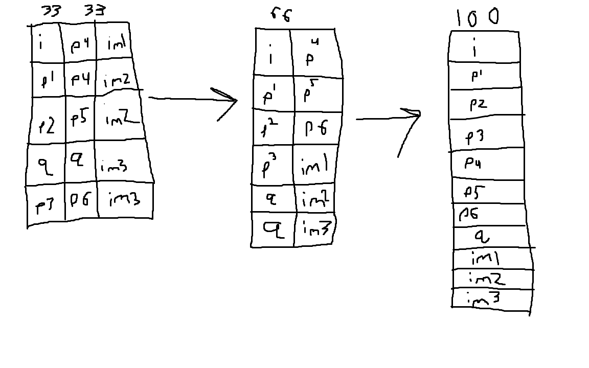

Sources: Original PDF, History of the web,
MonteCarlo font by Robert Leuschke
Roboto Slab font by Christian Robertson
Metacritic and Destructoid (quote)
Atlus Co., Ltd., Public domain, via Wikimedia Commons (logo)
PCMag (image)
lparchive (image)
Reddit (image)
Fandom wiki (Summary)
Atlus Youtube (Summary)
Persona 4 Golden
My goal for the website was a basic informational page about the video game Persona 4. My audience is people who are interested in RPGS or Persona. I tried my best to replicate the color style of the game for the background and text. I also only gave brief descriptions, so if the reader was interested in learning more, they should get the game for themselves. This was a lot more challenging then I thought. Besides the writing for the website, getting a good design down is rough. I am not all too satsfied with my final design, but, I just could not figure out what I need to change to make it look appealing. I would've liked the navbar to stay for the other breakpoints, but I saved it for the end and ran out of time.
The current page is seperated into 3 parts in a grid. There would be 2 breakpoints, one where the screen reaches the furthest right grid line and one where the screen reaches the other grid line. As the screen gets smaller it condenses the content in the box and moves it to fit on the screen. As seen in the image, it would become 2 columns at the first breakpoint, and then 1 long column at the second breakpoint.
Build to spec{kind=link}